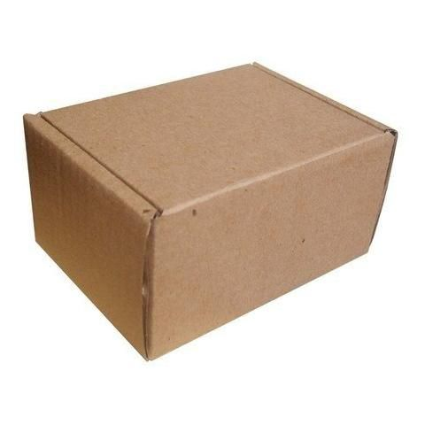

Gataria
Wellcome to Gataria, your site to find your favorite cat
Find how you want a image!
Color
Age

This project is a prototype, over time as my studies progress I will improve it or just create new and better ones.